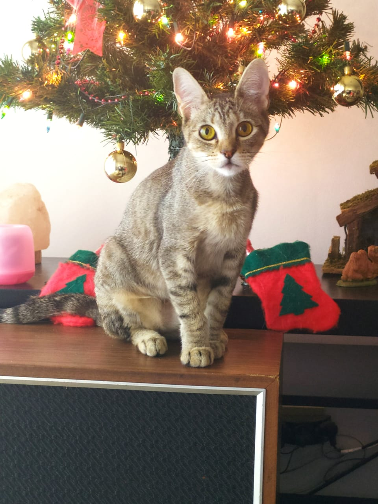

Mi nombre es Florencia
Mi color favorito es el rojo.
El nombre de mi perro es Tommy.
Esta es Loli, una gatita que rescaté en 20202, es una luchadora que estuvo 73 dias internada.
Soy adiestradora y paseadora de perros , te muestro a mi manada.
Estudio programación en Coder House.
Me animé en 2021 a estudiar programación para darle un giro a mi vida. Descubrí un mundo nuevo donde la creación no tiene límites.
Este Blog es creado para subir fotos con tus mascotas , los perros son seres sociables y un patio con parque no es suficiente ellos también necesitan interactuar, y que mejor que encontrar algunos amigos por este blog para que puedan juntarse a jugar.